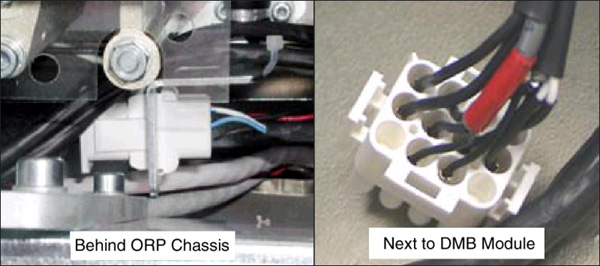
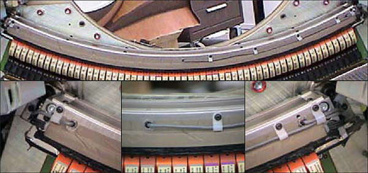

Operating Documentation
Direction 5181166-800, Rev# 7
BrightSpeed Select Service Methods Adv
Operating Documentation |
| Required Persons | Preliminary Reqs | Procedure | Finalization |
|---|---|---|---|
| 1 |
The objective of this procedure is to replace a failed thermistor:
Gain access to detector
Use pin extractor to remove pins from correct molex connector
Replace failed thermistor following the same cable routing
Restore power and allow detector temp to stabilize.
Verify proper system operation.
| Item | Qty | Effectivity | Part# | Manufacturer | |
|---|---|---|---|---|---|
| Amp Universal Mate-N-Lok Pin Pusher (Extractor) | 1 | - | - | - | |
| Item | Qty | Effectivity | Part# | Manufacturer |
|---|---|---|---|---|
| Tie-wraps | AR | - | - | - |
Position the table to its lowest position.
Remove gantry right side cover.
| Always turn OFF the HVDC before the 120 VAC. Turning OFF 120 VAC power before HVDC power can result in equipment damage. | |
Turn OFF Axial Enable, HVDC, and 120VAC switches on the Service Switch panel.
Remove gantry top and front covers.
Disconnect Detector Cable for failed thermistor probe.
There are three thermistors and two connectors, one on each side of the Detector Plate assembly.
Remove Thermistor wires/pins from the connector. Note on paper their location within the connector. Use pin extractor tool.
Illustration 1: Hi or ORP side and DMB or Low and Center Channel side connectors

Verify correct old Thermistor wires, then cut the old Thermistor cable close to where the Thermistor cable and Detector Heater cables are joined in the shrink-wrap sleeve. Do NOT cut the Detector Heater wires or the shrink-wrap. Leave the old wire in place.
Unscrew the Thermistor wire “Hold-down clamps” as needed.
Unscrew and remove the Thermistor using a 9mm open-end wrench.
Illustration 2: Remove old thermistor. Low, Center, High Channels left to right.

Make sure the new Thermistor is clean before installing (No lint, dirt, debris, etc.)
Screw in the new Thermistor until snug. Use finger pressure on wrench. Do not over-tighten. The metal Thermistor housing is only a shell. The wire should be free so it does not get twisted.
Route the wire along the detector side just like the old wire, against the inner radius of the Heater element.
Secure the wire with the “Hold-down” wire clamps. Make sure the wire is properly positioned at the Thermistor so it doesn't interfere with the DAS Fan Air Plenum, and that the wire isn't too tight, creating a sharp bend at the detector. It should also not be so loose as to get caught or rub on anything during rotation.
Route the wire along side the shrink-wrapped cable going to connector. Tie-wrap the new cable to the outside of the shrink-wrapped cable.
Cut the bad harness near the shrink-wrap at the connector end.
Install the pins of the new thermistor wire into the connector as previously marked.
Coil the excess harness and secure with tie-wraps. Make sure it does not interfere with anything during gantry rotation.
Re-install the connector and restore power. Perform a hardware reset.
Do the following:
Allow the detector to warm up 15 minutes before preliminary testing.
One hour warm-up before Fastcal and Image Quality testing
Verify detector temperature is 36 degrees Celsius
FastCal
IQ Check
Test the system. Take several scans for a couple of hours so that you are satisfied that the problem has been corrected.
Wait at least one (1) hour with power ON for the Detector to warm up. Then perform FastCal.
Perform Image Quality testing.